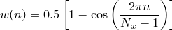

A range of commonly-used window functions may automatically be applied to data as it is read into the fft and ifft commands; these are listed together with their algebraic forms in Table 5.1 and shown in Figure 5.1. In each case, the window functions are given for sample number  , which ranges between
, which ranges between  and . The window functions may be invoked using the following syntax:
and . The window functions may be invoked using the following syntax:
fft [...] <out>() of <in>() window <window_name>
Where multi-dimensional FFTs are performed, window functions are applied to each dimension in turn. Other arbitrary window functions may be implemented by pre-multiplying data before entry to the fft and ifft commands.
Window Name |
Algebraic Definition |
Bartlett |
|
BartlettHann |
|
|
|
Cosine |
|
Gauss |
|
Hamming |
|
Hann |
 |
Lanczos |
|
Rectangular |
|
Triangular |
|


![$\displaystyle w(n) = \exp \left\{ -\frac{1}{2}\left[ \frac{n-(N_ x-1)/2}{\sigma (N_ x-1)/2} \right]^2 \right\} ,\; \textrm{for}\; \sigma =0.5$](images/img-0248.png)